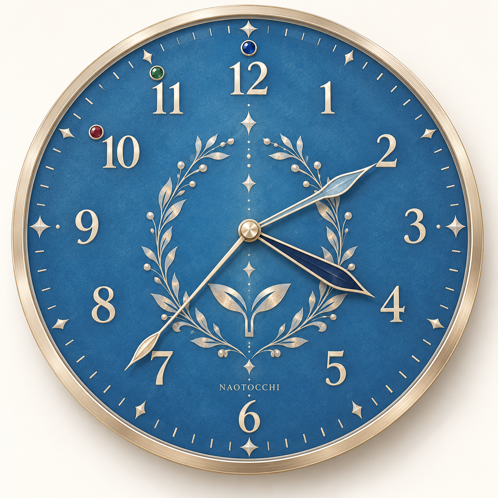
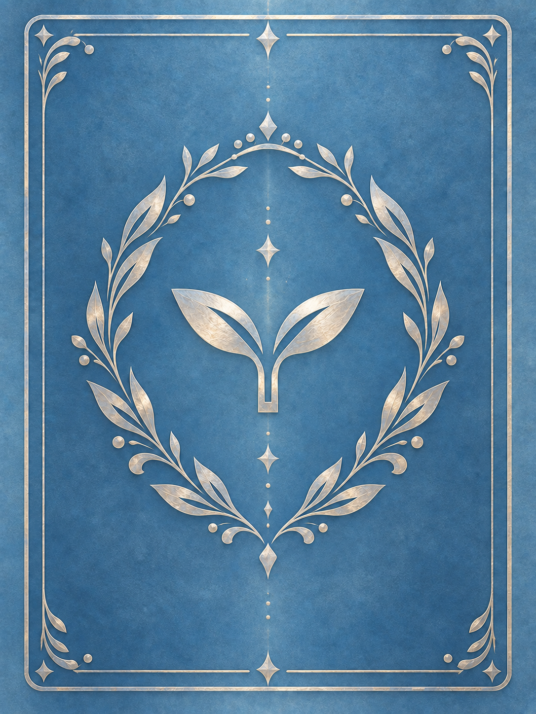
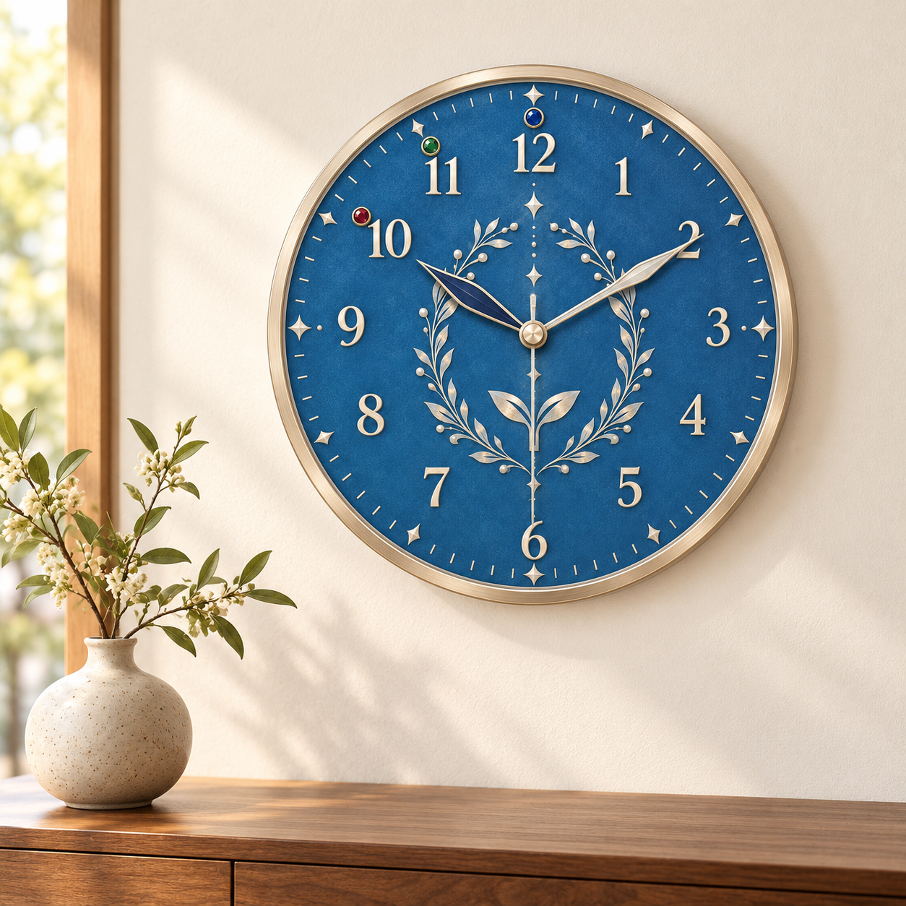

CARD GAME / LIFE CLOCK
めぐる時間に、
育つしるし。
カードの裏に咲く双葉を、暮らしの時計へ。
青銀の植物紋章から考える、4つのかたち。
本人限定の評価用試作 · 正式採用前

01 / THE ORIGINAL
すべては、この裏面から。

青地。銀の葉。小さな双葉。
最新mainで使われている正式裏面を、ピクセル変更なしで回収。山札と非公開カードは同じ画像を共有しています。
- 原寸
- 1086 × 1448 px（3:4）
- 正式UI
- 2:3のカード枠内に contain 表示
- 参照資料
- 保存用PNGと画素一致。ファイルの圧縮・RGB/RGBAは異なります。
基準 main：7c1f18c7 · 青銀裏面の導入：4c619525（2026-10-15）
02 / FOUR DIRECTIONS
同じ世界観、異なる佇まい。
丸型は時間の読みやすさ、角型はカードとの親和性。
完成イメージはAIによる意匠試作です。正確な目盛り・針の長さは下の操作図で比較できます。
03 / TRY THE HANDS
ひとつの時計に、
三つの時間。
意匠を簡略化した共通寸法の操作図。同じ12数字、同じ位置・直径の丸マーカーで比較します。
そだち10＝文字盤1目盛り。0は12の位置を借り、数値表示で区別します。11・12は拡張の候補色のみ。延長ルールを採用した表示ではありません。
時針・分針・秒針が連動する一般的な配置。秒針は細く、ゲームの短針Bとは別形状です。
画面上の切替はデザイン比較です。実物の独立3本針と通常時計のムーブメントは、別の機構として検討します。
IN EVERYDAY LIFE
遊び終えた時間も、美しく。
通常の時針・分針・秒針を備えた丸型Bのインテリアイメージ。機構の互換性を示す画像ではありません。

04 / FROM CONCEPT TO OBJECT
まずは、触れる一台へ。
ゲーム用は卓上型から
直径240mmの丸型、または約240×320mmの角型を初期検討寸法とします。手元で針を動かし、3本の重なり・保持力・読みやすさを実物で確認するための提案値です。
独立した同軸スリーブと摩擦ワッシャーで、他の針を連れ回さず保持できるかが最大の課題。市販時計の針を手で回すだけの流用は前提にしません。
通常時計は市販機構から
文字盤データ・配色・外枠は共通化候補。ムーブメント、針穴、針の重さ、中心軸の高さは個別設計。丸型は市販枠を探しやすく、角型はカードの意匠を保ちやすい、と考えています。
UVフルカラー＋白版で青地を試作。銀箔の質感は通常のカラー印刷だけでは再現できないため、箔押しや金属パーツは別見積りです。
公開価格による参考値
MYDOO：200×280mmの通常アクリル置時計、1個から税込2,880円。ケイオー：198×192mm以内の通常アクリル壁時計、100〜299個で税別1,676円／個。
2026-10-31確認。今回の金属枠・特注針・独立操作機構の見積りではありません。特注ゲーム用と高級仕様の製造費は未確認です。
A DESIGN TO LIVE WITH
第一候補は、丸型B。
双葉の記憶を残しながら、毎日読める余白がある。
まずは形と装飾量を選び、その後に針と素材を詰めていきます。
お選びいただきたいこと：A〜D／丸マーカーの色調／装飾の量。
正式採用・発注・ゲームへの反映はまだ行いません。